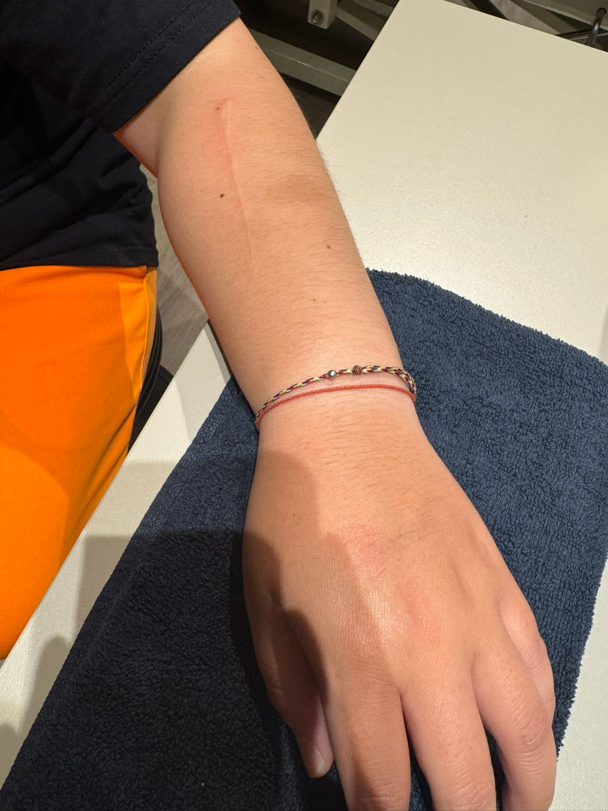
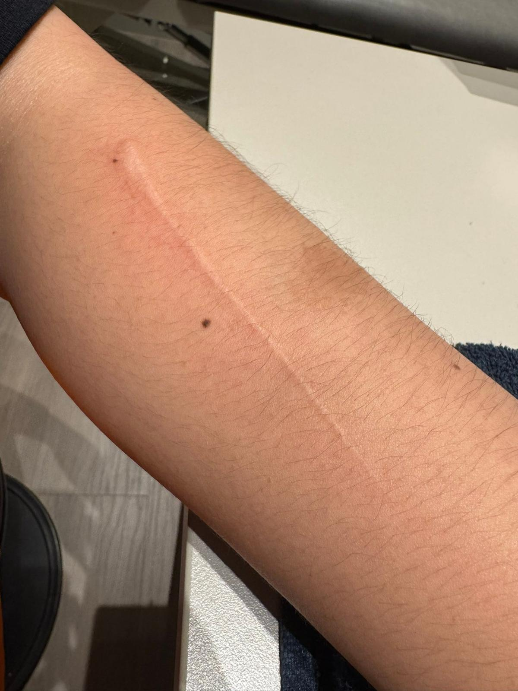

二十年的舊疤痕，輕柔手法後的變化：疤痕處理與手指關節痛
沒去學過Scarwork，真的完全不會有今天！
這位是因為食指MCP掌側關節痛而來，今天徒手只處理疤痕，就是用Scarwork學到的手法，處理完後讓她摸一摸，直呼「神奇」！
20多年來跟疤痕朝夕相處的疤痕主人，摸到疤痕的變化感受絕對不會錯：疤痕變很平整，摸起來跟皮膚非常貼合，手指再嘗試屈伸活動，也不痛了！
處理的疤痕的手法真的是很輕很柔，疤痕的主人常常都會被處理到睡著😪😪
就這麼輕柔，就可以讓20多年的疤痕產生變化而改變前臂區域的張力共構系統，近一步改善食指關節的疼痛！
人體就是這麼奧妙神奇又有趣！ 好玩啊！
#然後我又忘記拍before的照片😅
#疤痕處理
#biotensegrity
#Scarwork
#再次感謝神奇的人體🤩🤩🤩
中醫師 黃彥鈞

